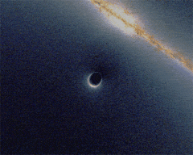

A black hole is a region in space where gravitational forces are so strong that nothing, not even light, can escape from it. The idea of a black hole comes from Albert Einstein's theory of general relativity, which describes how gravity affects the fabric of space and time. Black holes can form when massive stars run out of fuel and collapse under their own gravity.
Here are some key points about black holes:
1. Formation:
Stellar black holes: Formed when massive stars (more than about 20 times the mass of our sun) exhaust their nuclear fuel and collapse under their own gravity.
Supermassive black holes: Found at the centers of most galaxies, including our Milky Way. They have masses ranging from hundreds of thousands to billions of times that of the sun. The exact mechanism of their formation is still a topic of research, but they likely grow over time through accretion of mass and mergers with other black holes.

2. Event Horizon:
The boundary around a black hole beyond which nothing can escape is called the event horizon. Once an object crosses this boundary, it is inevitably drawn into the black hole.
The event horizon is not a physical surface but a mathematical boundary.
3. Singularity:
At the center of a black hole lies a point of infinite density called a singularity. General relativity breaks down at this point, and scientists believe that a theory of quantum gravity is needed to understand the physics on such a small scale.
4. Types of Black Holes:
Primordial black holes: Hypothetical black holes that could have formed in the early universe.
Micro black holes: Theoretical black holes with very small masses, possibly created in high-energy particle collisions.
5. Observation:
Direct observation of black holes is challenging because they do not emit light. However, their presence can be inferred by observing the effects of their gravity on nearby objects, such as stars orbiting around an invisible mass.
6. Hawking Radiation:
Proposed by physicist Stephen Hawking, Hawking radiation is theoretical radiation that black holes are predicted to emit due to quantum effects near the event horizon. This radiation causes black holes to slowly lose mass over time.
7. Interstellar Black Holes:
Black holes can wander through space, and some may not be associated with any visible matter. These interstellar black holes can only be detected if they interact with nearby objects or if they pass in front of background stars, causing gravitational lensing.
8. Recent Discoveries:
In recent years, gravitational wave detectors, such as LIGO and Virgo, have made groundbreaking observations of black hole mergers. These detections provide direct evidence of the existence of binary black hole systems.
Studying black holes is crucial for advancing our understanding of the fundamental nature of space, time, and gravity. Ongoing research aims to explore the mysteries of black holes and their role in the cosmos.